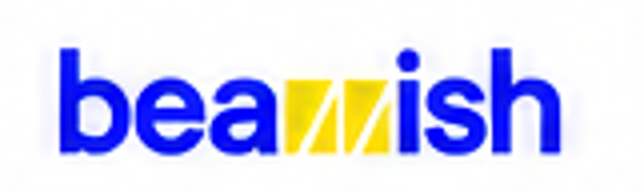

DESIGN & DEVELOPMENT HUB · 2026A single starting point for the Public Website, account access, Candidate Portal, Employer Portal and role-based Admin Backend. Every prototype keeps the same modern, youthful and confident design language.
Landing, Find Jobs, company discovery, Community, Career IRL and For Employers. No account required to browse.
Open public websiteCandidate, Employer and Community-only entry, with a separate staff login and access-request process.
Open account portalCareer dashboard, jobs, applications, match, companies, social Community, profile and settings.
Open Candidate v5Discover Talent, unified Hiring, company discovery, Community, growth, workspace and profile studio.
Open Employer v3Separate Platform Admin, Finance Admin and CMS Admin login, staff access requests and module ownership.
Choose backend rolePrototype package — all matching, user data, payments and publishing are illustrative. The portals are preserved from their latest selected HTML versions; navigation between files works offline, but a shared production database is not yet connected.